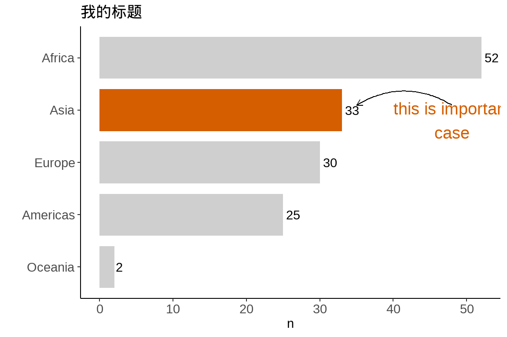
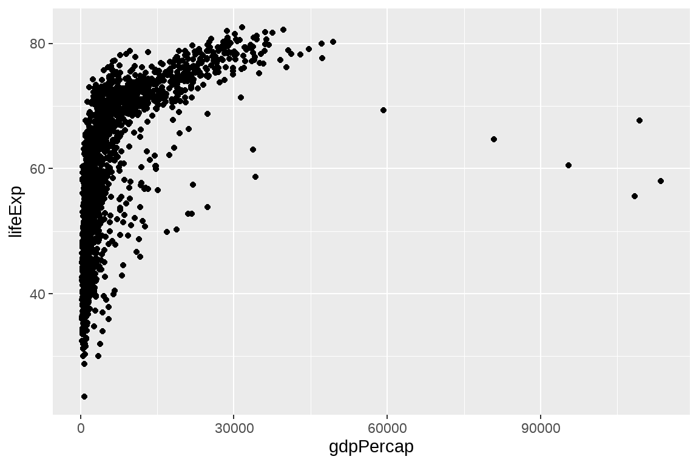

第 20 章 tidyverse中的若干技巧
聊聊tidyverse中常用的一些小技巧
“most of data science is counting, and sometimes dividing” — Hadley Wickham
library(tidyverse)
library(patchwork) # install.packages("patchwork")20.1 count()
我之前多次用到count()函数，其功能就是统计某个变量中各组出现的次数
df <- tibble(
name = c("Alice", "Alice", "Bob", "Bob", "Carol", "Carol"),
type = c("english", "math", "english", "math", "english", "math"),
score = c(60.2, 90.5, 92.2, 98.8, 82.5, 74.6)
)
df## # A tibble: 6 x 3
## name type score
## <chr> <chr> <dbl>
## 1 Alice english 60.2
## 2 Alice math 90.5
## 3 Bob english 92.2
## 4 Bob math 98.8
## 5 Carol english 82.5
## 6 Carol math 74.6df %>% count(name)## # A tibble: 3 x 2
## name n
## <chr> <int>
## 1 Alice 2
## 2 Bob 2
## 3 Carol 2如果用之前讲的group_by() + summarise()来写，
df %>%
group_by(name) %>%
summarise( n = n())## # A tibble: 3 x 2
## name n
## <chr> <int>
## 1 Alice 2
## 2 Bob 2
## 3 Carol 2count() 还有更多强大的参数， 比如
df %>% count(name,
sort = TRUE,
wt = score,
name = "total_score"
)## # A tibble: 3 x 2
## name total_score
## <chr> <dbl>
## 1 Bob 191
## 2 Carol 157.
## 3 Alice 151.如果不用count()，用group_by() + summarise()写，
df %>%
group_by(name) %>%
summarise(
n = n(),
total_score = sum(score, na.rm = TRUE)
) %>%
arrange(desc(total_score))## # A tibble: 3 x 3
## name n total_score
## <chr> <int> <dbl>
## 1 Bob 2 191
## 2 Carol 2 157.
## 3 Alice 2 151.当然，count()在特定场合下的简便写法，遇到复杂的分组统计，还是得用用group_by() + summarise()组合。
20.2 在 count() 中创建新变量
可以在count()里构建新变量，并利用这个新变量完成统计
df %>% count(range = 10 * (score %/% 10))## # A tibble: 4 x 2
## range n
## <dbl> <int>
## 1 60 1
## 2 70 1
## 3 80 1
## 4 90 320.3 add_count()
想增加一列，代表每人参加的考试次数
df %>%
group_by(name) %>%
mutate(n = n()) %>%
ungroup()## # A tibble: 6 x 4
## name type score n
## <chr> <chr> <dbl> <int>
## 1 Alice english 60.2 2
## 2 Alice math 90.5 2
## 3 Bob english 92.2 2
## 4 Bob math 98.8 2
## 5 Carol english 82.5 2
## 6 Carol math 74.6 2可以有更简单的方法
df %>% add_count(name)## # A tibble: 6 x 4
## name type score n
## <chr> <chr> <dbl> <int>
## 1 Alice english 60.2 2
## 2 Alice math 90.5 2
## 3 Bob english 92.2 2
## 4 Bob math 98.8 2
## 5 Carol english 82.5 2
## 6 Carol math 74.6 220.4 nth(), first(), last()
v <- c("a", "c", "d", "k")v[1]## [1] "a"v[length(v)]## [1] "k"c("a", "c", "d", "k") %>% nth(3)## [1] "d"c("a", "c", "d", "k") %>% first()## [1] "a"c("a", "c", "d", "k") %>% last()## [1] "k"用在数据框中，同样可以使用
df %>%
filter(score == first(score))## # A tibble: 1 x 3
## name type score
## <chr> <chr> <dbl>
## 1 Alice english 60.2df %>%
group_by(name) %>%
filter(score == last(score))## # A tibble: 3 x 3
## # Groups: name [3]
## name type score
## <chr> <chr> <dbl>
## 1 Alice math 90.5
## 2 Bob math 98.8
## 3 Carol math 74.620.5 列变量重新排序
比如想把score放在第一列
df %>%
select(score, everything())## # A tibble: 6 x 3
## score name type
## <dbl> <chr> <chr>
## 1 60.2 Alice english
## 2 90.5 Alice math
## 3 92.2 Bob english
## 4 98.8 Bob math
## 5 82.5 Carol english
## 6 74.6 Carol math这个方法，对列变量较多的情形非常适用。
20.6 if_else
df %>% mutate(
assess = if_else(score > 85, "very_good", "good")
)## # A tibble: 6 x 4
## name type score assess
## <chr> <chr> <dbl> <chr>
## 1 Alice english 60.2 good
## 2 Alice math 90.5 very_good
## 3 Bob english 92.2 very_good
## 4 Bob math 98.8 very_good
## 5 Carol english 82.5 good
## 6 Carol math 74.6 good20.7 case_when
df %>% mutate(
assess = case_when(
score < 70 ~ "general",
score >= 70 & score < 80 ~ "good",
score >= 80 & score < 90 ~ "very_good",
score >= 90 ~ "best",
TRUE ~ "other"
)
)## # A tibble: 6 x 4
## name type score assess
## <chr> <chr> <dbl> <chr>
## 1 Alice english 60.2 general
## 2 Alice math 90.5 best
## 3 Bob english 92.2 best
## 4 Bob math 98.8 best
## 5 Carol english 82.5 very_good
## 6 Carol math 74.6 good20.8 找出前几名
df %>%
top_n(2, score)## # A tibble: 2 x 3
## name type score
## <chr> <chr> <dbl>
## 1 Bob english 92.2
## 2 Bob math 98.820.9 去除多余的空白
library(stringr)
str_trim(" excess whitespace in a string be gone!")## [1] "excess whitespace in a string be gone!"# Use str_squish() to remove any leading, trailing, or excess whitespace
str_squish(" excess whitespace in a string be gone!")## [1] "excess whitespace in a string be gone!"20.10 取反操作
3:10 %in% c(1:5)## [1] TRUE TRUE TRUE FALSE FALSE FALSE FALSE FALSE有时候需要一个不属于的操作符
# 自定义一个不属于操作符
`%nin%` <- Negate(`%in%`)
3:10 %nin% c(1:5)## [1] FALSE FALSE FALSE TRUE TRUE TRUE TRUE TRUE# 使用purrr::negate()自定义反向操作符
`%nin%` <- purrr::negate(`%in%`)
3:10 %nin% c(1:5)## [1] FALSE FALSE FALSE TRUE TRUE TRUE TRUE TRUE20.11 drop_na()
dt <- tribble(
~x, ~y,
1, NA,
2, NA,
NA, -3,
NA, -4,
5, -5
)
dt## # A tibble: 5 x 2
## x y
## <dbl> <dbl>
## 1 1 NA
## 2 2 NA
## 3 NA -3
## 4 NA -4
## 5 5 -5dt %>% drop_na()## # A tibble: 1 x 2
## x y
## <dbl> <dbl>
## 1 5 -5# dt %>% drop_na(x)20.12 replace_na()
dt <- tribble(
~x, ~y,
1, NA,
2, NA,
NA, -3,
NA, -4,
5, -5
)
dt %>% mutate(x = replace_na(x, 0))## # A tibble: 5 x 2
## x y
## <dbl> <dbl>
## 1 1 NA
## 2 2 NA
## 3 0 -3
## 4 0 -4
## 5 5 -5dt %>% mutate(
x = replace_na(x, mean(x, na.rm = TRUE))
)## # A tibble: 5 x 2
## x y
## <dbl> <dbl>
## 1 1 NA
## 2 2 NA
## 3 2.67 -3
## 4 2.67 -4
## 5 5 -5之前讲正则表达式也有类似的函数stringr::str_replace_na()，
20.13 coalesce
dt <- tribble(
~x, ~y,
1, NA,
2, NA,
NA, -3,
NA, -4,
5, -5
)
dt %>% mutate(
z = coalesce(x, 0)
# z = coalesce(x, y)
)## # A tibble: 5 x 3
## x y z
## <dbl> <dbl> <dbl>
## 1 1 NA 1
## 2 2 NA 2
## 3 NA -3 0
## 4 NA -4 0
## 5 5 -5 5有时候，我们可能为了减少信息丢失，想填充NA
dt <- tribble(
~name, ~age,
"a", 1,
"b", 2,
"c", NA,
"d", 2
)
dt %>%
mutate(
age_adj = ifelse(is.na(age), mean(age, na.rm = TRUE), age)
)## # A tibble: 4 x 3
## name age age_adj
## <chr> <dbl> <dbl>
## 1 a 1 1
## 2 b 2 2
## 3 c NA 1.67
## 4 d 2 220.14 summarise() 生成 list-column
summarize()会生成一个value，
library(gapminder)
gapminder %>%
group_by(continent) %>%
summarise(
avg_gdpPercap = mean(gdpPercap)
)## # A tibble: 5 x 2
## continent avg_gdpPercap
## <fct> <dbl>
## 1 Africa 2194.
## 2 Americas 7136.
## 3 Asia 7902.
## 4 Europe 14469.
## 5 Oceania 18622.summarize()也可以生成一个list，
library(gapminder)
gapminder %>%
group_by(continent) %>%
summarise(test = list(t.test(gdpPercap))) %>% # 单样本的t检验
mutate(tidied = purrr::map(test, broom::tidy)) %>%
unnest(tidied) %>%
ggplot(aes(estimate, continent)) +
geom_point() +
geom_errorbarh(aes(
xmin = conf.low,
xmax = conf.high
))
gapminder %>%
group_by(continent) %>%
summarise(test = list(lm(lifeExp ~ gdpPercap))) %>% # 线性回归
mutate(tidied = purrr::map(test, broom::tidy, conf.int = TRUE)) %>%
unnest(tidied) %>%
filter(term != "(Intercept)") %>%
ggplot(aes(estimate, continent)) +
geom_point() +
geom_errorbarh(aes(
xmin = conf.low,
xmax = conf.high,
height = .3
))
以下两种方法，同样完成上面的工作，具体方法会在第 21 章介绍
gapminder %>%
group_nest(continent) %>%
mutate(test = map(data, ~ t.test(.x$gdpPercap))) %>%
mutate(tidied = map(test, broom::tidy)) %>%
unnest(tidied)gapminder %>%
group_by(continent) %>%
group_modify(
~ broom::tidy(t.test(.x$gdpPercap))
)20.15 count() + fct_reorder() + geom_col() + coord_flip()
最好用的四件套
gapminder %>%
distinct(continent, country) %>%
count(continent) %>%
ggplot(aes(x = continent, y = n)) +
geom_col()
gapminder %>%
distinct(continent, country) %>%
count(continent) %>%
ggplot(aes(x = fct_reorder(continent, n), y = n)) +
geom_col() +
coord_flip()
画图容易，但画出一张好图并不容易
gapminder %>%
distinct(continent, country) %>%
count(continent) %>%
mutate(coll = if_else(continent == "Asia", "red", "gray")) %>%
ggplot(aes(x = fct_reorder(continent, n), y = n)) +
geom_text(aes(label = n), hjust = -0.25) +
geom_col(width = 0.8, aes(fill = coll) ) +
coord_flip() +
theme_classic() +
scale_fill_manual(values = c("#b3b3b3a0", "#D55E00")) +
theme(legend.position = "none",
axis.text = element_text(size = 11)
) +
labs(title = "我的标题", x = "")
或者偷懒，将continent == "Asia"的结果直接赋值给aes(fill = ___ )， 效果与上面是一样的。
gapminder %>%
distinct(continent, country) %>%
count(continent) %>%
ggplot(aes(x = fct_reorder(continent, n), y = n)) +
geom_text(aes(label = n), hjust = -0.25) +
geom_col(width = 0.8, aes(fill = continent == "Asia") ) +
coord_flip() +
theme_classic() +
scale_fill_manual(values = c("#b3b3b3a0", "#D55E00")) +
annotate("text", x = 3.8, y = 48, label = "this is important\ncase",
color = "#D55E00", size = 5) +
annotate(
geom = "curve", x = 4.1, y = 48, xend = 4.1, yend = 35,
curvature = .3, arrow = arrow(length = unit(2, "mm"))
) +
theme(legend.position = "none",
axis.text = element_text(size = 11)
) +
labs(title = "我的标题", x = "")
20.16 scale_x/y_log10
现实世界很多满足对数规则
- 各国人均GDP
- 各国人口
- 不同人士的收入
- 公司的营业额
gapminder %>%
ggplot(aes(x = gdpPercap, y = lifeExp)) +
geom_point()
gapminder %>%
ggplot(aes(x = gdpPercap, y = lifeExp)) +
geom_point() +
scale_x_log10() # A better way to log transform
20.17 fct_lump
门诊病症的流水记录
tb <- tibble::tribble(
~disease, ~n,
"鼻塞", 112,
"流涕", 130,
"发热", 89,
"腹泻", 5,
"呕吐", 12,
"咳嗽", 102,
"咽痛", 98,
"乏力", 15,
"腹痛", 2,
"妄想", 3,
"幻听", 6,
"失眠", 1,
"贫血", 8,
"多动", 2,
"胸痛", 4,
"胸闷", 5
)p1 <- tb %>%
uncount(n) %>%
ggplot(aes(x = disease, fill = disease)) +
geom_bar() +
coord_flip() +
theme(legend.position = "none")
p2 <- tb %>%
uncount(n) %>%
mutate(
disease = forcats::fct_lump(disease, 5),
disease = forcats::fct_reorder(disease, .x = disease, .fun = length)
) %>%
ggplot(aes(x = disease, fill = disease)) +
geom_bar() +
coord_flip() +
theme(legend.position = "none")p1 + p2
20.18 fct_reoder2
让图例的顺序与图的曲线顺序一致
dat_wide <- tibble(
x = 1:3,
top = c(4.5, 4, 5.5),
middle = c(4, 4.75, 5),
bottom = c(3.5, 3.75, 4.5)
)
dat_wide %>%
pivot_longer(
cols = c(top, middle, bottom),
names_to = "region",
values_to = "awfulness")## # A tibble: 9 x 3
## x region awfulness
## <int> <chr> <dbl>
## 1 1 top 4.5
## 2 1 middle 4
## 3 1 bottom 3.5
## 4 2 top 4
## 5 2 middle 4.75
## 6 2 bottom 3.75
## 7 3 top 5.5
## 8 3 middle 5
## 9 3 bottom 4.5dat <- dat_wide %>%
pivot_longer(
cols = c(top, middle, bottom),
names_to = "region",
values_to = "awfulness") %>%
mutate(
region_ABCD = factor(region),
region_sane = fct_reorder2(region, x, awfulness)
)
p_ABCD <- ggplot(dat, aes(x, awfulness, colour = region_ABCD)) +
geom_line() + theme(legend.justification = c(1, 0.85))
p_sane <- ggplot(dat, aes(x, awfulness, colour = region_sane)) +
geom_line() + theme(legend.justification = c(1, 0.85))
p_ABCD + p_sane +
plot_annotation(
title = 'Make the legend order = data order, with forcats::fct_reorder2()')
20.19 unite
dfa <- tribble(
~school, ~class,
"chuansi", "01",
"chuansi", "02",
"shude", "07",
"shude", "08",
"huapulu", "101",
"huapulu", "103"
)
dfa## # A tibble: 6 x 2
## school class
## <chr> <chr>
## 1 chuansi 01
## 2 chuansi 02
## 3 shude 07
## 4 shude 08
## 5 huapulu 101
## 6 huapulu 103df_united <- dfa %>%
tidyr::unite(school, class, col = "school_plus_class", sep = "_", remove = FALSE)
df_united## # A tibble: 6 x 3
## school_plus_class school class
## <chr> <chr> <chr>
## 1 chuansi_01 chuansi 01
## 2 chuansi_02 chuansi 02
## 3 shude_07 shude 07
## 4 shude_08 shude 08
## 5 huapulu_101 huapulu 101
## 6 huapulu_103 huapulu 103当然，简单的情况也可以用mutate()实现
dfa %>% mutate(newcol = str_c(school, "_", class))## # A tibble: 6 x 3
## school class newcol
## <chr> <chr> <chr>
## 1 chuansi 01 chuansi_01
## 2 chuansi 02 chuansi_02
## 3 shude 07 shude_07
## 4 shude 08 shude_08
## 5 huapulu 101 huapulu_101
## 6 huapulu 103 huapulu_10320.20 separate()
df_united %>%
tidyr::separate(school_plus_class, into = c("sch", "cls"), sep = "_", remove = F)如果用mutate()来实现，语句就会比较复杂些
df_united %>%
mutate(sch = str_split(school_plus_class, "_") %>% map_chr(1)) %>%
mutate(cls = str_split(school_plus_class, "_") %>% map_chr(2)) ## # A tibble: 6 x 5
## school_plus_class school class sch cls
## <chr> <chr> <chr> <chr> <chr>
## 1 chuansi_01 chuansi 01 chuansi 01
## 2 chuansi_02 chuansi 02 chuansi 02
## 3 shude_07 shude 07 shude 07
## 4 shude_08 shude 08 shude 08
## 5 huapulu_101 huapulu 101 huapulu 101
## 6 huapulu_103 huapulu 103 huapulu 103如果每行不是都恰好分隔成两部分呢？就需要tidyr::extract(), 使用方法和tidyr::separate()类似
dfb <- tribble(
~school_class,
"chuansi_01",
"chuansi_02_03",
"shude_07_0",
"shude_08_0",
"huapulu_101_u",
"huapulu_103__p"
)
dfb## # A tibble: 6 x 1
## school_class
## <chr>
## 1 chuansi_01
## 2 chuansi_02_03
## 3 shude_07_0
## 4 shude_08_0
## 5 huapulu_101_u
## 6 huapulu_103__pdfb %>% tidyr::separate(school_class,
into = c("sch", "cls"),
sep = "_",
extra = "drop",
remove = F)20.21 extract()
有时候分隔符搞不定的，可以用正则表达式，讲捕获的每组弄成一列
dfc <- tibble(x = c("1-12week", "1-10wk", "5-12w", "01-05weeks"))
dfc## # A tibble: 4 x 1
## x
## <chr>
## 1 1-12week
## 2 1-10wk
## 3 5-12w
## 4 01-05weeksdfc %>% tidyr::extract(
x,
c("start", "end", "letter"), "(\\d+)-(\\d+)([a-z]+)",
remove = FALSE
)## # A tibble: 4 x 4
## x start end letter
## <chr> <chr> <chr> <chr>
## 1 1-12week 1 12 week
## 2 1-10wk 1 10 wk
## 3 5-12w 5 12 w
## 4 01-05weeks 01 05 weeks20.22 crossing()
先看看效果
tidyr::crossing(x = c("F", "M"), y = c("a", "b"), z = c(1:2))## # A tibble: 8 x 3
## x y z
## <chr> <chr> <int>
## 1 F a 1
## 2 F a 2
## 3 F b 1
## 4 F b 2
## 5 M a 1
## 6 M a 2
## 7 M b 1
## 8 M b 2这个函数在数据模拟的时候很方便，
tidyr::crossing(trials = 1:10, m = 1:5) %>%
group_by(trials) %>%
mutate(
guess = sample.int(5, n()),
result = m == guess
) %>%
summarise(score = sum(result) / n())## # A tibble: 10 x 2
## trials score
## <int> <dbl>
## 1 1 0.4
## 2 2 0
## 3 3 0.2
## 4 4 0.2
## 5 5 0.2
## 6 6 0.4
## 7 7 0.4
## 8 8 0.4
## 9 9 0.2
## 10 10 0.4再来一个例子
sim <- tribble(
~f, ~params,
"rbinom", list(size = 1, prob = 0.5, n = 10)
)
sim %>%
mutate(sim = invoke_map(f, params))## # A tibble: 1 x 3
## f params sim
## <chr> <list> <list>
## 1 rbinom <named list [3]> <int [10]>rep_sim <- sim %>%
crossing(rep = 1:1e5) %>%
mutate(sim = invoke_map(f, params)) %>%
unnest(sim) %>%
group_by(rep) %>%
summarise(mean_sim = mean(sim))
head(rep_sim)## # A tibble: 6 x 2
## rep mean_sim
## <int> <dbl>
## 1 1 0.6
## 2 2 0.5
## 3 3 0.7
## 4 4 0.6
## 5 5 0.5
## 6 6 0.5rep_sim %>%
ggplot(aes(x = mean_sim)) +
geom_histogram(binwidth = 0.05, fill = "skyblue") +
theme_classic()
也可用在较复杂的模拟，比如下面介绍的大数极限定理，
sim <- tribble(
~n_tosses, ~f, ~params,
10, "rbinom", list(size = 1, prob = 0.5, n = 15),
30, "rbinom", list(size = 1, prob = 0.5, n = 30),
100, "rbinom", list(size = 1, prob = 0.5, n = 100),
1000, "rbinom", list(size = 1, prob = 0.5, n = 1000),
10000, "rbinom", list(size = 1, prob = 0.5, n = 1e4)
)
sim_rep <- sim %>%
crossing(replication = 1:50) %>%
mutate(sims = invoke_map(f, params)) %>%
unnest(sims) %>%
group_by(replication, n_tosses) %>%
summarise(avg = mean(sims))sim_rep %>%
ggplot(aes(x = factor(n_tosses), y = avg)) +
ggbeeswarm::geom_quasirandom(color = "lightgrey") +
scale_y_continuous(limits = c(0, 1)) +
geom_hline(
yintercept = 0.5,
color = "skyblue", lty = 1, size = 1, alpha = 3 / 4
) +
ggthemes::theme_pander() +
labs(
title = "50 Replicates Of Mean 'Heads' As Number Of Tosses Increase",
y = "mean",
x = "Number Of Tosses"
)
数值模拟我们会在第 27 章专门介绍。